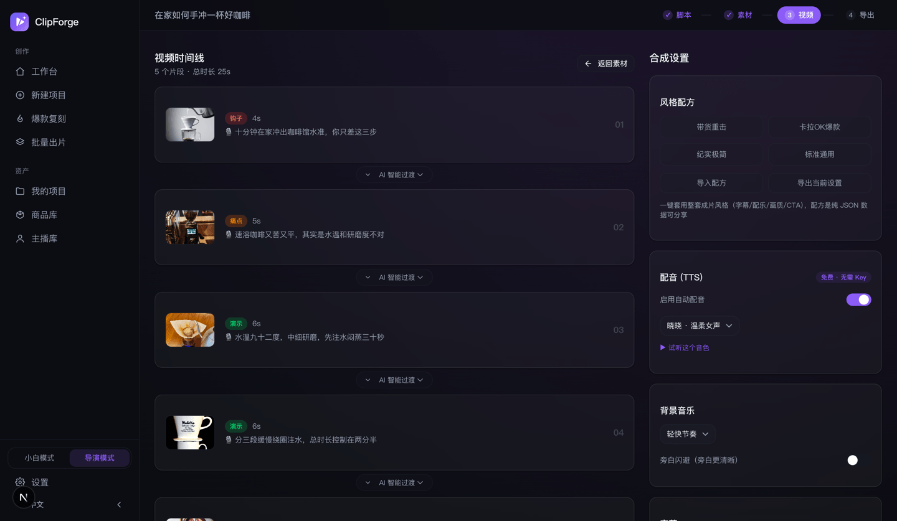

开源 · 无水印 · 0 Key 也能出整片
一张商品图, 秒变会卖货的短视频
上传商品图或粘贴商品链接,AI 提炼卖点、写短剧 / 口播带货脚本,商品原图保真出镜,真动态镜头 + 配音 + 字幕 + BGM,直接发抖音小店 / 快手 / 小红书 / 视频号 / TikTok Shop。
开源 AGPL-3.0 · 数据全在本机 · 也可 Docker 自部署 · 内置 MCP + CLI,在 Claude / Cursor 一句话出片
↓ 下面的成片
↑ 输入就是左上那一张商品图,台词/分镜/画面/人声全部自动产出(真实商品 Seedance 2.5 生成,点 🔇 开声音);台词先被判官团撕过——初稿「大家好,今天给大家推荐…」被改成成片里的「就这玩意儿,把我星巴克的钱包给救了」;中间这条「九宫格→一键整片」:口播、挤咖啡、举杯喝、举盒收尾 4 个镜头一次生成原生切换。右边是另一张商品图(便携榨汁杯)同流程直接切英文市场。
三步出片,发店就能卖
把商品丢进来,选出片方式
上传商品图、粘贴商品链接(自动抓标题 / 价格 / 主图)或说一句话主题;然后二选一:🆓 免费快剪(全程 ¥0,约 2 分钟)或 ✨ AI 生成成片——费用按秒直接标在选项上,用你自己的模型 Key。
脚本先看一眼,再花钱
AI 按十种风格四大形态(情景短剧 / 口播种草 / 开箱测评…)写好口播脚本;免费档直接开跑,AI 档停在「脚本好了」——看完文案点一次才计费,判官团还能先把台词撕一遍。
全托管直达成片,一键导出
免费档:真实素材配画面 + 免费配音 + 本地合成;AI 档:九宫格锁人锁品 → Seedance 2.5 一键整片,原生切镜 + 台词人物原声说出。抖音 9:16 / 小红书 3:4 一键切换,复制文案包就能发。
带货卖家在意的每一道命门,
都做成了独家能力
真动态镜头,不是静图 PPT
图生视频质量主路:运镜提示词引擎锁定商品、链式首尾帧让转场在镜头内生成、拼接不跳切;运镜强度轻 / 中 / 强一键切换,不满意的镜头保持画面只重跑动态——A/B 真实调用验证,商品全程不变形不丢失。
商品保真,绝不 P 坏
image-to-image 锁定商品原图,换背景、打光也不改商品本体——避免「货不对板」的售后风险。
短剧带货,不念参数
十种脚本风格:情景短剧 / 反转剧场 / 街头采访…多角色各配免费专属音色;内置素人主播库+真实人脸约束,真人出镜不出网红假脸。
0 成本出整片
免费素材 + 免费 AI 配音(中英日韩西)+ 免费 BGM + 本地合成。本地素材库可批量上传自己的图片和视频,按名称与标签找画面,只用本项目素材补齐空镜。
双模式工作台,小白导演各得其所
小白模式:脚本 → 一键成片全托管,不见分镜不见术语;导演模式一键切换,解锁分镜编辑、导演台、逐镜运镜、九宫格全部专业工具。侧边栏 App 外壳,入口一目了然。
生产控制台,花多少钱先算清
导演模式一页编排九阶段工作流,按真实模型目录估算费用区间与耗时,再按低成本 / 速度 / 质量 / 一致性智能推荐模型;版本、失败原因和恢复动作也在同一处。
视觉记忆 + 逐镜质量闸门
关键帧、人物定妆、商品原图与前镜尾帧会按模型能力组成最强参考;支持时原生同步对白、口型与环境声。每镜保留候选和实际生成策略,人工采用后才进入合成。
坏一秒,不重做整镜
质检问题自动定位修复区间,可追加人物 / 商品时间锚点;先看真实模型时长、价格与降级方式再确认。只生成坏掉的一段,本地拼回原镜头并保留原声和旧候选。
切点有证据,母版不覆盖
逐个检查真实拼接点前后的亮度、色彩与饱和度,同步测量整片响度。默认只分析;两遍响度标准化或去闪烁需明确选择,结果另存为新版本。
原片出多条,校对后批量导出
按原话找片段,多选命名后预演并批量导出。长稿搜索与分段编辑、商品词校对、进度、取消和中断重试贯穿完整流程,原片与旧版本保留。
先看构图,再多平台导出
锁定成片版本,选择模糊背景、完整留白或定点裁切,预览真实画面后批量导出。任务中心持续跟踪进度,中断提醒保留,失败可重试。
免费 / AI 双档,花钱只有一次点击
创建时明选:免费快剪全程 ¥0 全托管;AI 生成成片费用按秒直接标在选项上,脚本免费生成、看完文案点一次才计费。开源 BYOK:费用按量付给你选的模型平台,ClipForge 永远免费。
合规默认开,不被限流
AIGC 标识对齐国标 GB 45438、发布前限流自检、广告法违禁词扫描附改写建议——出片即合规。
Agent 一句话出片 + 批量
MCP + CLI + agent Skill:在 Claude / Cursor 里贴商品链接直接出片;大促前 10 个商品一键批量,A/B 测转化。
判官团撕台词,九宫格一键整片
生成花钱前,四位毒舌判官(节奏/口语/创意/结构)先逐镜撕台词给等长重写;九宫格分镜一次生图锁人物场景,关键帧直接喂 Seedance 2.5 一键整片——原生切镜、台词人物原声逐字说出(首屏中间那条就是)。
主播库 · 多视图定妆
自建多个带货主播形象,一键生成 正面/侧面/背面/特写 四视图定妆照(一次生成保证同一个人);九宫格与整片把定妆照当人物锚——跨镜头、跨条视频不换脸。
今天发什么 · 全自动日更
抖音热搜实时选题、按类目筛,点热点直接成片,每条热点带「同款」直达爆款复刻;按人设自动选题配 cron 就是日更机;391 款成片模板按商品自动推荐、可 AI 定制分享。
真实界面,不是效果图



传统外包 / 同类工具 vs ClipForge
| 环节 | ClipForge | 传统外包 |
|---|---|---|
| 脚本创作 | AI 30 秒生成 3 套脚本 | 编导写脚本 1-2 小时 |
| 素材制作 | AI 生图 / 动态镜头 + 免费素材,分钟级 | 拍摄 + 修图 1-3 天 |
| 视频剪辑 | 自动合成 + 转场 + 字幕 + 配音 | 剪辑师 2-4 小时 |
| 多平台适配 | 抖音/快手/小红书/视频号/TikTok 一键导出 | 手动调比例 / 字幕 |
| 合规标识 | AIGC 标识 + 限流自检 + 违禁词扫描,默认开 | 靠人肉记住,漏了限流 |
| 成本 | 0 成本免 Key,无水印不限条数 | 单条数百到数千元 |
| 你在意的 | ClipForge | 传统开源拼接工具 | 商业 AI 视频 SaaS | 手工剪辑软件 |
|---|---|---|---|---|
| 商品保真出镜 | ✅ 原图锁定 | ❌ 库存素材,商品不出镜 | ⚠️ 部分支持 | ➖ 手动贴图 |
| 动态镜头质量 | ✅ 图生视频 + 无缝转场 | ❌ 静图拼接 | ✅ 多为图生视频 | ➖ 看素材 |
| 短剧 + 多角色配音 | ✅ 十风格,每角色一音色 | ❌ 单旁白 | ⚠️ 数字人口播为主 | ❌ 全手工 |
| 国内平台合规 | ✅ 默认开 | ❌ | ❌ 多面向海外 | ⚠️ 部分标识 |
| 0 成本 + 无水印 + 本地 | ✅ 开源自部署 | ✅ | ❌ 付费 / 云端 / 水印 | ⚠️ 高级付费,云端 |
以各产品公开资料为准(2026-07),功能随版本演进;ClipForge 与上述产品均无关联,仅作选型参考。
常见问题
ClipForge 是免费的吗?
是。开源(AGPL-3.0)、无水印、不限条数。免费素材 + 免费微软 Edge TTS 配音 + 免费 BGM + 本地 FFmpeg 合成,没有任何 AI Key 也能出整片;想要更高画质再自带 Key,一个接口聚合 7 大平台 30+ 模型(GPT Image 2 / Seedance 2.0 / Kling 3.0…)。
会把我的商品图改变形吗?
不会,这是命门功能:image-to-image 锁定商品原图,换背景、打光也不改商品本体——既保转化,也避免「货不对板」的合规与售后风险。
生成的片子会不会一眼假、像静图拼接?
不会。配了视频模型后走图生视频质量主路:每个分镜都是真动态镜头,运镜提示词引擎锁定商品,链式首尾帧让转场在镜头内生成、拼接不跳切;运镜强度轻/中/强可调,不满意的镜头可以只重跑动态不换画面。
和传统开源拼接工具、商业 SaaS、手工剪辑软件有什么区别?
传统开源工具多是关键词配库存素材的静图拼接,商品不出镜;商业 SaaS 按条付费、素材上传云端、免费档常带水印;手工软件需要逐段剪辑。ClipForge 开源免费无水印、商品保真、动态镜头、短剧多角色配音、国内合规默认开,数据全在本机——详见上方对比表。
需要真人出镜吗?
不需要。商品图 + AI 配画面 + 免费配音 + 字幕自动合成,全程不出真人脸(faceless),一个人一天能出几十条。
国内发布会因为 AI 内容被限流吗?
合规默认开:成片自动写入 AIGC 隐式标识(对齐国标 GB 45438-2025),默认烧显式「AI 生成」标识;发布前限流自检(风险词 / 钩子 / 时长 / 字幕 / CTA 逐项 ✓⚠✗ 附具体改法)+ 广告法违禁词扫描,出片即合规。
不会剪辑的小白能用吗?
能,这是默认体验。小白模式只有一条路:丢商品图 → 看一眼脚本 → 直达成片,全程一张进度卡,不见分镜不见术语;想要专业控制再切导演模式(分镜 / 导演台 / 逐镜运镜 / 九宫格)。详见使用手册,或看更详细的小白逐步教程。
AI 生成一条视频要多少钱?
免费快剪档全程 ¥0;AI 生成成片档按秒计费,一条 12~15 秒约 ¥5~35(取决于所选视频模型档位),费用直接标在选项上、脚本确认后点一次才产生。开源 BYOK:费用按量付给你自己选的模型平台(如 Atlas Cloud),ClipForge 本身免费。